항공기체정비기능사 (2015-04-04 기출문제)
1과목: 비행원리
1. 다음 중 동압과 정압에 대한 설명으로 옳은 것은?
- 동압과 정압을 이용하여 항공기의 비행 속도를 계산할 수 있다.
- 동압을 이용하여 객실 고도를 계산할 수 있다.
- 동압을 이용하여 절대고도를 계산할 수 있다.
- 동압과 정압을 이용하여 항공기의 절대고도를 계산 할 수 있다.
(정답률: 70%)

2. 다음 중 버핏(buffit) 현상을 가장 옳게 설명한 것은?
- 이륙 시 나타나는 비틀림 현상
- 착륙 시 활주로 중앙선을 벗어나려는 현상
- 실속속도로 접근 시 비행기 뒷부분의 떨림 현상
- 비행중 비행기의 앞부분에서 나타나는 떨림 현상
(정답률: 73%)
3. 그림과 같은 받음각에 따른 양력계수(CL)의 변화를 나타낸 그래프에서 (가)와 (나)에 대한 용어로 옳은 것은?
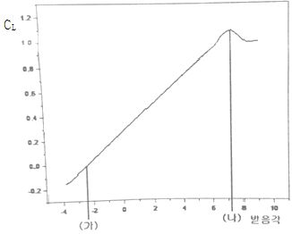
- (가) 영양력 받음각, (나) 실속각
- (가) 최소항력 받음각, (나) 실속각
- (가) 유도각, (나) 영양력 받음각
- (가) 실속각, (나) 영양력 받음각
(정답률: 69%)
4. 비중량에 대한 설명으로 옳은 것은?
- 단위 체적당 중량
- 단위 질량당 중량
- 단위 길이당 최소중량
- 단위 면적당 작용하는 최소중량
(정답률: 66%)
5. 수직 꼬리날개와 동체 상부에 장착하여 방향 안정성을 증가시키기 위한 것은?
- 실속 스트립
- 슬롯
- 볼텍스 발생장치
- 도살핀
(정답률: 89%)
6. 공기의 밀도 단위가 kgfㆍs2/m4 으로 주어질 때 kgf 단위의 의미는?
- 질량
- 중량
- 비중
- 비중량
(정답률: 72%)
7. 회전익 항공기에서 회전축에 연결된 회전날개 깃이 하나의 수평축에 대해 위 아래로 움직이는 운동은?
- 스핀운동
- 리드-래그 운동
- 플래핑 운동
- 자동 회전 운동
(정답률: 75%)
8. 프로펠러 깃의 압력 중심의 기본적인 위치를 나타낸 것으로 옳은 것은?
- 깃 끝부근
- 깃 뿌리 부근
- 깃의 뒷전 부근
- 깃의 앞전 부근
(정답률: 57%)
9. 헬리콥터가 전진비행을 할 때 회전 날개 깃에 발생하는 양력분포의 불균형을 해결할수 있는 방법으로 가장 옳은 것은?
- 전진하는 깃과 후퇴하는 깃의 받음각을 동시에 증가 시킨다.
- 전진하는 깃과 후퇴하는 깃의 받음각을 동시에 감소 시킨다.
- 전진하는 깃의 받음각은 증가시키고 뒤로 후퇴하는 깃의 받음각은 감소 시킨다.
- 전진하는 깃의 받음각은 감소시키고 뒤로 후퇴하는 깃의 받음각은 증가 시킨다.
(정답률: 62%)
10. 비행기가 평형상태에서 벗어난 뒤에 다시 평형상태로 돌아가려는 초기의 경향을 가장 옳게 설명은 한 것은?
- 정적안정성이 있다 [양(+)의 정적안정]
- 동적 안정성이 있다 [양(+)의 동적안정]
- 정적으로 불안정하다 [음(-)의 정적안정]
- 동적으로 불안정하다 [음(-)의 동적안정]
(정답률: 65%)
11. 수평비행을 하던 비행기가 연직 상방향으로 관성력을 받을 때 비행기의 하중배수를 옳게 나타낸 식은?
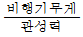
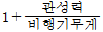
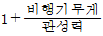
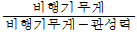
(정답률: 63%)
12. 활공기가 고도 2400m 상공에서 활공을 하여 수평 활공 거리 36Km를 비행하였다면, 이때 양항비는 얼마인가?
- 1/5
- 10
- 1/15
- 15
(정답률: 57%)
13. 입구의 지름이 10cm이고, 출구의 지름이 20cm인 원형관에 액체가 흐르고 있다. 지름 20cm ,되는 단면적에서의 속도가 2.4m/s일 때 지름 10cm 되는 단면적에서의 속도는 약 몇 m/s 인가?
- 4.8
- 9.6
- 14.4
- 19.2
(정답률: 67%)
14. 고속형 날개에서 항력 발산 마하수를 넘어서면 어떤 항력이 급증하는가?
- 형상 항력
- 압력 항력
- 조파 항력
- 표면 마찰항력
(정답률: 68%)
15. 프로펠러 항공기 기관의 제동마력이 260ps 이고, 프로펠러 효율이 0.8 일 때 이 비행기의 이용 마력은 몇 ps 인가?
- 108
- 208
- 308
- 408
(정답률: 76%)
16. 다음 중 신뢰성 정비 방식을 채택 할 수 있는 여건으로 가장 거리가 먼 것은?
- 정비인력의 증가
- 항공기 설계개념의 진보
- 항공기 기자재의 품질수준 향상
- 비파괴 검사 방법 등에 의한 검사법 발전
(정답률: 80%)
17. 수직 공간이 제한된 곳에 사용되는 스크류 드라이버의 명칭으로 옳은 것은?
- 리드 스크류 드라이버
- 래칫 스크류 드라이버
- 오프셋 스크류 드라이버
- 프린스 스크류 드라이버
(정답률: 68%)
18. 항공기의 접지에 대한 설명으로 옳은 것은?
- 정전기의 축적을 막는다.
- 전기 저항을 증가시킨다.
- 전기 전압을 증가시킨다.
- 번개의 위험을 벗어나기 위한 작업이다.
(정답률: 75%)
19. 보통 나무, 종이, 직물 및 잡종 폐기물 등과 같은 가연성 물질에서 일어나는 화재는?
- A급
- B급
- C급
- D급
(정답률: 87%)
20. 다음 ( ) 안에 들어갈 알맞은 용어는?
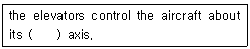
- vertical
- lateral
- longitudinal
- horizontal
(정답률: 58%)
2과목: 항공기정비
21. 『MSS20426AD4-4』리벳을 사용한 리벳 배치 작업 시 최소 끝거리는 몇 인치인가?
- 5/16
- 3/8
- 1/4
- 7/32
(정답률: 54%)
22. 표면이 눌려 원래의 외형으로부터 변형된 현상으로 단면적의 변화는 없으며 손상부위와 손상되지 않는 부위 사이와의 경계 모양이 완만한 형상을 이루고 있는 결함은?
- 찍힘 (NICK)
- 눌림(DENT)
- 긁힘 (SCRATCH)
- 구김 (CREASE)
(정답률: 79%)
23. 좁은 장소에서 작업 할 때 굴곡이 필요한 경우 래칫 핸들, 스피드 핸들, 소켓 또는 익스텐션 바와 같이 사용되는 그림과 같은 것은?
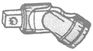
- 어댑터
- 유니버셜 조인트
- 벨트 렌치
- 콤비네이션 렌치
(정답률: 78%)
24. 게이지블록(GAGE BLOCK)에 대한 설명으로 틀린것은?
- 사용하기 전에 마른 걸레나 솔벤트로 방청제 등의 이물질을 닦아 낸다.
- 사용 시 손가락 끝으로 잡아 접촉면적을 되도록 작게 한다.
- 이론상 측정력은 접촉 면적에 비례하여 증가되어야 하며, 실제로는 표준이 되는 측정력을 사용하는 것이 좋다.
- 측정할 때 정밀도는 온도와는 관련이 없고, 링킹(wiring king) 작업과 가장 관련이 깊다.
(정답률: 69%)
25. 2개 이상의 굽힘이 교차하는 부분의 안쪽 굽힘 접선 교점에 발생하는 응력집중에 의한 균열을 방지하기 위해 뚫는 구멍은?
- 스톱홀
- 릴리프홀
- 리머홀
- 파일럿홀
(정답률: 78%)
26. 휴대용 소화기 중 조종실이나 객실에 설치되어 일반 화재,전기 화재 및 기름 화재에 사용되는 소화기는?
- 분말소화기
- 물소화기
- 포말소화기
- 이산화탄소소화기
(정답률: 64%)
27. 다음 중 성형점에서 굴곡접선까지의 거리를 나타낸 명칭은?
- 중립선
- 셋트백
- 굴곡허용량
- 사이트라인
(정답률: 62%)
28. 항공기의 지상취급에 해당되지 않는 작업은?
- 잭작업
- 계류작업
- 견인작업
- 계획된 액세서리 교환작업
(정답률: 73%)
29. 밑줄 친 부분의 영문 내용으로 옳은 것은?
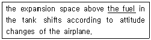
- 연료
- 윤활유
- 유압유
- 공기압
(정답률: 82%)
30. 운항정비 기간에 발생한 항공기 정비 불량 상태의 수리와 운항 저해의 가능성이 많은 각 계통의 예방 정비 및 감항성을 확인하는 것을 목적으로 하는 정비작업은 ?
- 중간점검(transit check)
- 기본점검(line maintenance)
- 정시점검(schedule maintenance)
- 비행 전후 점검(pre/post flight check)
(정답률: 70%)
31. 볼트와 너트로 체결하는 작업시 안전 및 유의 사항에 대한 설명으로 틀린 것은?
- 렌치를 가용할 때에는 당기는 방향으로 힘을 가한다.
- 익스텐션 바를 사용시 손으로 바를 잡아 고정하고 작업한다.
- 볼트와 너트를 조일 때는 해체할 때 보다 한 단계 작은 치수의 렌치를 사용한다.
- 볼트나 너트를 조일 때는 일정부분 손으로 조인 후 렌치를 사용하여 마무리 한다.
(정답률: 78%)
32. 항공기용 기계요소 및 재료에 대한 규격 중 군(military)에 관련된 규격이 아닌 것은?
- AN
- MIL
- ASA
- MS
(정답률: 64%)
33. 다음 중 헬리콥터의 지상 정비지원은 어떤 정비에 해당 되는가 ?
- 공장정비
- 벤치체크
- 운항정비
- 시한성정비
(정답률: 56%)
34. 비파괴 검사법 중 피폭안전에 철저한 관리가 요구되는 검사법은?
- 침투탐상검사
- 와전류검사
- 자분탐상검사
- 방사선투과검사
(정답률: 71%)
35. 화학적 또는 전기화학적 반응에 의해 재료의 성질이 변화 또는 퇴화하는 현상을 무엇이라 하는가?
- 균열(CRACK)
- 마모(ABRASION)
- 골패임(GOUGE)
- 부식(CORROSION)
(정답률: 78%)
36. 샌드위치 구조에 대한 설명으로 틀린 것은?
- 트러스 구조에서 외피로 쓰인다.
- 무게를 감소시키는 장점이 있다.
- 국부적인 휨 응력이나 피로에 강하다.
- 보강재를 끼워 넣기 어려운 부분이나 객실 바닥면에 사용된다.
(정답률: 59%)
37. 복합재료를 제작할 때 사용되는 섬유형 강화재가 아닌 것은?
- 고무섬유
- 유리섬유
- 탄소섬유
- 보론섬유
(정답률: 63%)
38. 다음 중 ATA 100에 의한 항공기 시스템 분류가 틀린 것은?
- ATA 21 – AIR CONDITIONING
- ATA 29 - OXYGEN
- ATA 30 – ICE & RAIN PROTECTION
- ATA 32 – LANDING GEAR
(정답률: 59%)
39. 수평꼬리날개에 대한 설명으로 틀린 것은?
- 수평안정판 내부를 연료 탱크로 사용하면 진동 감소와 피로에 대한 저항성이 커진다.
- 수평안정판은 세로안정성을 담당하고 세로 조종은 승강키로 한다.
- 수평 안정판의 면적이 증가하면 표면저항이 증가하여 세로 안정성이 감소한다.
- 대형 여객기에서는 항속거리 증가를 위해 수평안정판 내부를 연료탱크로 사용하기도 한다.
(정답률: 49%)
40. 주회전 날개 트랜스미션의 역할이 아닌 것은?
- 시동기와 연결
- 유압펌프나 발전기 구동
- 오토로테이션 시 기관과의 연결을 차단
- 기관의 출력을 감속시켜 회전 날개에 전달
(정답률: 50%)
3과목: 항공기체
41. 헬리콥터의 스키드 기어형 착륙장치에 대한 설명으로 틀린 것은?
- 정비가 쉽다.
- 구조가 간단하다.
- 지상 활주에 사용된다.
- 소형 헬리콥터에 주로 사용된다.
(정답률: 66%)
42. 테일로터가 장착된 호버링 헬리콥터의 방향 조종 방법은?
- 주 로터의 rpm 변경
- 테일로터 디스크 방향 조작
- 테일로터의 피치 조작
- 주 로터 디스크 방향 조작
(정답률: 50%)
43. 헬리콥터의 테일붐에 있는 구조로 회전날개에서 발생하는 토크를 상쇄시키는데 기여하며 위쪽과 아래쪽의 대칭 구조를 갖고 있는 것은?
- 힌지(hindge)
- 수직핀 (vertical fin)
- 스키드 기어(skid gear)
- 회전 날개 보호대(tail rotor guard)
(정답률: 59%)
44. 열가소성 수지 중 유압 백업링(back-up ring), 호스(hose), 패킹(packing), 전선피복(coating) 등에 사용되는 수지는?
- 아크릴수지
- 테프론
- 염화비닐수지
- 폴리에틸렌수지
(정답률: 41%)
45. 다음 중 대형항공기에 주로 사용되는 뒷전플랩은 ?
- 슬롯 플랩
- 스플릿 플랩
- 단순플랩
- 크루거 플랩
(정답률: 42%)
46. 항공기 기체 수리 도면에 리벳과 관련된 다음과 같은 표기의 의미는?
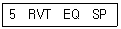
- 길이가 같은 5개 리벳이 장착된다.
- 리벳이 5인치의 간격으로 장착된다.
- 5개의 리벳이 같은 간격으로 장착된다.
- 연거리를 같게 하여 5개 리벳이 장착된다.
(정답률: 59%)
47. 강도를 중시하여 만들어진 고강도 알루미늄 합금이 아닌 것은?
- 2218
- 2024
- 2017
- 2014
(정답률: 62%)
48. 기관 마운트를 선택하기 전에 고려하지 않아도 되는 것은?
- 기관의 제조기간
- 기관의 형식 및 특성
- 기관 마운트의 장착 위치
- 기관 마운트의 장착방향
(정답률: 73%)
49. 항공기 위치 표시 방법 중 기수 또는 기수로부터 일정한 거리에 위치한 상상의 수직면을 기준으로 하는 방법은?
- 버턱선 (BL)
- 날개위치선(WS)
- 동체 위치선(FS)
- 동체 수위선(BWL)
(정답률: 39%)
50. 인장력을 받는 봉에서 발생하는 변형률의 단위는?
- m
- N/m
- N/m2
- 무차원
(정답률: 57%)
51. 랜딩기어 계통에서 트라이 사이클 기어 배열의 장점이 아닌 것은?
- 항공기의 지상전복(ground looping)을 방지한다.
- 이륙, 착륙 중에 테일 휠의 진동을 막는다.
- 이륙이나 착륙 중 조종사에게 좋은 시야를 제공한다.
- 빠른 착륙속도에서 강한 브레이크를 사용할 수 있다.
(정답률: 45%)
52. 특수강 SAE 2330에 대한 설명으로 옳은 것은?
- 탄소강을 나타낸다.
- 크롬-바나듐강이다.
- 니켈의 함유량이 23% 이다.
- 탄소의 함유량이 0.30%이다.
(정답률: 60%)
53. 항공기용으로 가장 흔한 저압타이어에 다음과 같이 표기되어 있다면 옳은 설명은?
- 타이어 안지름이 7.00 IN 이다.
- 타이어 너비가 7.00 IN 이다.
- 타이어 바깥지름이 6.00 IN 이다.
- 타이어 너비가 6.00 IN 이다.
(정답률: 56%)
54. 하중배수에 대한 설명으로 옳은 것은?
- 추력을 비행기의 무게로 나눈 값이다.
- 양력을 비행기의 무게로 나눈 값이다.
- 수평 비행시의 양력을 화물하중으로 나눈 값이다.
- 기본 하중을 현재의 하중으로 나눈 값이다.
(정답률: 55%)
55. 구리의 성질로 틀린 것은?
- 전연성이 좋다.
- 가공하기 어렵다.
- 열전도율이 높다.
- 전기전도율이 크다.
(정답률: 75%)
56. 응력이 제거되면 변형률도 제거되어 원래 상태로 회복이 가능한 한계응력을 나타내는 것은?
- 항복점
- 인장강도
- 파단점
- 탄성한계
(정답률: 64%)
57. 폭 3CM, 너비 12CM 직사각형 단면인 24CM 길이의 사각봉에 288kgf 의 인장력이 작용할 때 인장응력은 약 몇 kgf/m2 인가?
- 0.33
- 1
- 4
- 8
(정답률: 41%)
58. 헬리콥터의 꼬리부분에 해당하지 않는 것은?
- 핀(fin)
- 테일붐
- 연료 및 오일탱크
- 파일론
(정답률: 72%)
59. 다음 중 고정 지지보를 나타낸 것은?
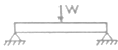
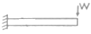
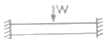
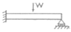
(정답률: 48%)
60. 금속의 표면경화 방법 중 질화처리(nitriding)에 대한 설명으로 틀린 것은?
- 질화층은 경도가 우수하고, 내식성 및 내마멸성이 증가한다.
- 암모니아가스 중에서 500~550℃ 정도의 온도로 20~100 시간 정도 가열한다.
- 철강재료의 표면경화 (surface hardening)에 적용한다.
- 질소와 친화력이 약한 알루미늄, 티타늄, 망간 등을 함유한 강은 질화처리법을 적용하지 않는다.
(정답률: 61%)